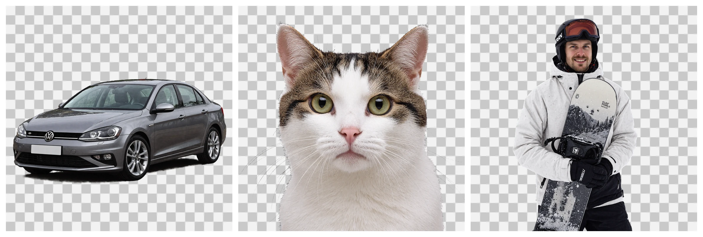
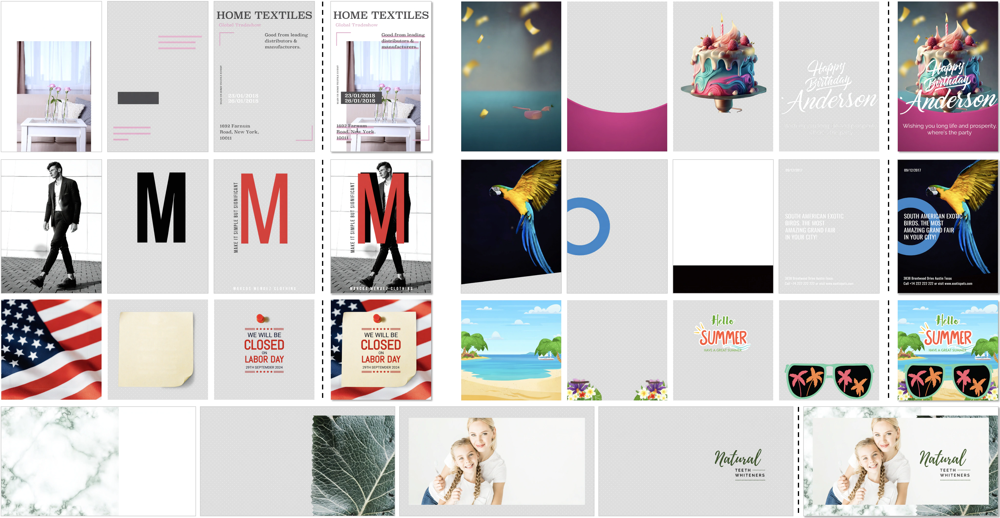
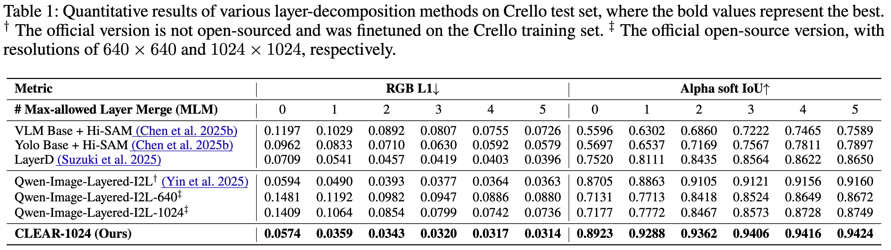

Ming Image
Ming Image is a family of models for visual-design generation and editable layer decomposition. Ming-Image-0.2-Design is the latest Design model, using the same inference code as 0.1 Design.
| Model | Task | Params (DiT) | Weights | Blog | Skills | Demo |
|---|---|---|---|---|---|---|
| Ming-Image-0.2-Design | Visual-design generation | 6B | 🤗 Hugging Face 🧩 ModelScope | — | Design · PPT | — |
| Ming-Image-0.1-Design | Visual-design generation | 6B | 🤗 Hugging Face 🧩 ModelScope | Blog | Design · PPT | Try it |
| Ming-Image-0.1-Design-Layer | Editable layer decomposition | 6B | 🤗 Hugging Face 🧩 ModelScope | Blog | Design · PPT | Try it |
Design models generate UI, infographics, posters, and text-rich compositions, including transparent-background images. The Layer model decomposes flattened designs into independently editable transparent layers.
Leaderboard
| Model | [Artificial Analysis leaderboard](https://artificialanalysis.ai/image/leaderboard/text-to-image) |
|---|---|
| Ming-Image-0.2-Design (Latest) | #1 among open-weight models overall As of Nov 25, 2026 · AA-Image-T2I v2.1 [Ming-Image-0.2-Design ranked first on the AA-Image-T2I v2.1 overall open-weights leaderboard](assets/ming-image-0.2-design-aa-t2i-leaderboard.webp) |
| Ming-Image-0.1-Design | #1 among open-weight models in UI/UX Design As of Sep 22, 2026 [Ming-Image-0.1-Design UI/UX Design leaderboard](assets/ming-image-design-ui-ux-leaderboard.webp) |
Gallery
Ming-Image-0.2-Design
<sub>Animated showcase · 4.13 MB · May take a moment to load · Open animation</sub>

Ming-Image-0.2-Design e-commerce hero visuals slideshow
<strong>E-commerce hero visuals</strong>
Fine material detail and clear product information.
<sub>Animated showcase · 2.79 MB · May take a moment to load · Open animation</sub>

Ming-Image-0.2-Design web design slideshow
<strong>Web design</strong>
Multi-section layouts and a cohesive visual style.
<sub>Animated showcase · 6.53 MB · May take a moment to load · Open animation</sub>

Ming-Image-0.2-Design spatial design slideshow
<strong>Spatial design</strong>
Harmonizing structure, light, and shadow in complex scenes.
Ming-Image-0.1-Design and -Layer Models
These examples were generated with the 0.1 Design and Layer models.
Text-to-image
Transparent-background text-to-image

Layer decomposition


Use with skills
- Ling UI Design uses generated visual references and layer decomposition to help an agent build and visually check UI code from a prompt or screenshot.
- Image to Editable PPT helps an agent recreate one generated page or slide image as an editable PowerPoint slide, with text and simple shapes converted to native elements.
These are separate agent workflows; follow each skill's setup instructions for its dependencies and compatible model service.
Requirements
- Python 3.10 or newer;
- CUDA-capable PyTorch for full model inference;
- a local checkpoint directory or a Hugging Face Hub repository ID.
Install the runtime dependencies in a clean environment:
bashpip install -r requirements.txt
flash_attention_2 is optional. The CLI defaults to eager attention because the LLM only implements eager and FlashAttention 2 attention classes; the diffusion transformer always uses PyTorch SDPA internally. Selecting --attn-implementation sdpa fails closed at load time.
Inference
0.2 Design and 0.1 Design share the same inference code and options. The text-to-image examples below use inclusionAI/Ming-Image-0.2-Design; substitute inclusionAI/Ming-Image-0.1-Design to run the earlier model. Layer decomposition continues to use inclusionAI/Ming-Image-0.1-Design-Layer.
The --model argument accepts either a local directory or an HF Hub repo ID. Hub models are resolved to one immutable local snapshot before any component is loaded. Use --revision to pin a branch, tag or commit. The examples use the published Hub IDs; replace them with local checkpoint directories for offline inference.
Sampling defaults and size inputs are task-specific:
| Task | Steps | CFG | Size input | Default / recommended |
|---|---|---|---|---|
| Text-to-image | 12 | 1.0 | --width + --height | 2048 × 2048 (default, 1:1); examples: 2560 × 1440 (16:9), 2432 × 1824 (4:3), 1664 × 2496 (2:3) |
| Layer decomposition | 12 | 2.0 | --resolution working bucket | Input-image aspect ratio; 1024 bucket recommended, 512 faster |
Pass --steps or --cfg to override either value explicitly. For text-to-image, pass --width and --height together (width × height). The pairs above use existing 2048-level aspect-ratio buckets. Other positive size pairs within a 1:4–4:1 ratio are accepted: inference uses the nearest 1024- or 2048-level internal size/aspect bucket and resizes the final image to the requested dimensions if needed. Omitting both gives 2048 × 2048. Legacy square text-to-image calls may still use --resolution; do not combine it with --width/--height. For layer decomposition, --resolution remains a working-size selector (512 or 1024), while the output preserves the input image's aspect ratio.
The default and minimum validated deployment is one GPU with at least 80 GiB of memory, running in BF16. This configuration passes both model families end-to-end, and all demos below use it by default.
bashexport CUDA_VISIBLE_DEVICES=0
Select --attn-implementation flash_attention_2 when FlashAttention 2 is installed; the portable CLI default remains eager.
For both tasks, --prompt accepts either raw text or a path to a prompt file. Use --validate-only to check the checkpoint contract and task combination without loading model weights:
bashpython infer.py --model inclusionAI/Ming-Image-0.2-Design --task text-to-image \ --prompt "A red circle on a white background" \ --width 2560 --height 1440 --validate-only
Text-to-image demo
Natural-language example (Ming-Image-0.2-Design model card):
bashpython infer.py \ --model inclusionAI/Ming-Image-0.2-Design \ --task text-to-image \ --prompt "Landing page for a productivity app called Flow. Clean minimal design, white background, generous whitespace. Top navigation with the wordmark 'Flow' on the left and links Product, Pricing, Docs on the right. Centered hero with a bold headline 'Focus without the noise' and a gray subheading 'One calm workspace to plan, focus, and finish.' A single purple call-to-action button labeled 'Start free'. Below the hero, three feature cards with small icons, soft rounded corners and soft shadows. Card 1: title 'Plan your day', body text 'Turn scattered tasks into a clear, realistic plan.' Card 2: title 'Focus sessions', body text 'Start a distraction-free session and stay in flow.' Card 3: title 'See progress', body text 'Know what moved, what slipped, and what comes next.' Modern sans-serif typography. Keep every heading and body line short and legible. Render all text exactly as written. Do not invent additional copy." \ --width 2048 --height 2048 \ --output-dir outputs/flow
For better results, we recommend a Figma-style structured prompt and the corresponding prompt enhancer. The established example below renders one cabin across four seasons using the exact JSON prompt; the long prompt stays in its file.
bashpython infer.py \ --model inclusionAI/Ming-Image-0.2-Design \ --task text-to-image \ --prompt assets/t2i_four_seasons_cabin_prompt.json \ --attn-implementation flash_attention_2 \ --width 2048 --height 2048 \ --output-dir outputs/t2i
Text-to-image prompt rewriting
An instruction-following VLM can turn a short caption into a precise, layout-structured JSON description: Figma-style layers ordered back to front, with exact coordinates, hierarchy, color specs, and every rendered string quoted verbatim and owned exactly once. Unlike layer decomposition, the text-to-image rewriter describes the complete requested canvas; set its aspect_ratio to match the chosen width and height.
This rewrite is a pre-processing step outside infer.py. Prompt enhancement (PE) can use Ling-3.0-flash-VL or qwen3.8-27B; run it first, then pass its output to --prompt as raw text or via an asset file.
The released system prompt is stored in assets/t2i_rewriter_system_prompt.txt and reproduced below:
textYou are a senior visual designer and image-prompt engineer. Expand the user's request into one precise, high-resolution Figma-style caption. Return only one JSON object. Use exactly two top-level keys. `canvas_settings` contains exactly `aspect_ratio`, `ambient_lighting`, and `image_style`. `layers` lists visible groups from background to topmost overlay. Every layer contains exactly `description`, `coordinates`, `hierarchy_and_relation`, and `color_specs`; `color_specs` is an array of hex colors. `coordinates` MUST be one string, never an object or array, in exactly this form: `"cx: 0.500, cy: 0.500, w: 1.000, h: 1.000"`. Values are normalized; each bbox encloses its complete owned object and stays inside the canvas. A layer is one selectable visible semantic group: background, full person, coherent object, panel, card, row, or text block. Prefer the fewest groups that preserve the layout. Keep people and objects intact. Never create invisible parents, guides, placeholders, empty layers, duplicate summaries, or multiple owners for one element. Preserve every user-supplied rendered string character-for-character and as one contiguous string. Unless multiple visible copies are requested, it must occur exactly once across all `description` fields and zero times in `hierarchy_and_relation`. Quote it only where describing its visible rendering; refer to the related subject elsewhere with unquoted semantic wording. Enumerate intended copy, invent extra copy sparingly, and never hide content behind "other text", "remaining labels", or "etc." Describe concrete composition, typography, materials, texture, lighting, pose, and camera treatment without literary filler. Use `hierarchy_and_relation` only for ownership, alignment, containment, stacking, and occlusion. Infer structured layouts first. Use one complete layer per card and state its row and column. A compact secondary table may be one layer only if every header and cell is listed; otherwise use a visible shared frame when present, one complete header, and one complete layer per body row, binding values to columns and stating blanks. Enumerate sequences, schedules, spans, gaps, and vacant tracks in visual order. Do not mistake ordinary alignment for a table. Silently verify schema, string coordinates, Z-order, exact-text counts, geometry, bbox validity, and completeness.
Transparent-background generation tip
To generate an image with an alpha channel, choose exactly one of the following fixed phrases and place it at the beginning of the prompt. Do not combine multiple prefixes.
带透明通道，4通道RGBA图像透明背景，alpha通道，无底图抠图素材，背景alpha=0孤立主体，透明PNG图层不要白底，不要棋盘格，只要透明通道RGBA, 4-channel, transparent backgroundisolated subject, alpha matte, no backgroundcutout PNG, alpha=0 outside the objecttransparent canvas, not white, not checkerboardproduction RGBA layer for compositing
Layer-decomposition demo
This example separates the flattened card design into six transparent RGBA layers. See the source input and the exact six-layer specification.

bashpython infer.py \ --model inclusionAI/Ming-Image-0.1-Design-Layer \ --task layer-decompose \ --input-image assets/layer_samples/card_making_input.png \ --prompt assets/layer_samples/card_making_prompt.txt \ --attn-implementation flash_attention_2 \ --resolution 1024 \ --output-dir outputs/layers
The layer count is parsed from a "Decompose this image into N layers" or "Number of layers: N" specification in the prompt. When --prompt is omitted, --num-layers N generates the default request Decompose this image into N layers.
The layer model returns the requested layers plus one leading composite/full-canvas image. The CLI skips that first image and saves the standalone layers as layer_01.png, layer_02.png, and so on.
Layer-decomposition prompt rewriting
Layer decomposition is driven by an explicit per-layer specification, not a free-form caption. The reference pipeline first runs a prompt enhancer: an instruction-following VLM rewrites the user's rough layer plan into a precise decomposition — concrete colors/positions/shapes per layer, real text quoted verbatim on its own front layer, a text-supporting card/panel/badge/banner as its own layer directly behind the text, the main subject as its own layer, and the background last absorbing the remaining supports and surfaces.
This rewrite is a pre-processing step outside infer.py: run the enhancer first, then pass its output to --prompt (as raw text or via an asset file). The enhancer's output is exactly the format this CLI parses — it regenerates the "Decompose this image into N layers" / "Number of layers: N" spec, so the layer count flows through the same --prompt parsing path described above.
Prompt enhancement (PE) can use Ling-3.0-flash-VL or qwen3.8-27B as the instruction-following VLM. The guided prompt below is part of the released pipeline and is kept here for reproducibility:
textGUIDED_PROMPT = """You are a graphic-design layer-decomposition expert. You are given ONE flattened design image and a ROUGH layer plan from the user. Rewrite the rough plan into a precise layer decomposition that matches the image. User's rough layer plan: {spec} Guidelines: - Follow the user's plan EXACTLY: use the same number of layers and the same per-layer role/meaning, in the same order. Layer 1 is the FRONT-most (topmost); the last layer is the background/environment. Stacking the layers back-to-front must reproduce the image. - For each layer, write a concrete one-or-two-sentence description grounded in the image: real colors, positions and shapes. - TEXT goes in the front layer(s); quote any real text VERBATIM in double quotes and keep its original language (do not translate). - A text-supporting CARD / PANEL / BADGE / BANNER is its OWN layer directly behind the text — do not merge it into the text layer or into the background. - The MAIN SUBJECT (hero product/photo/illustration) is its own layer. - The BACKGROUND/ENVIRONMENT is the LAST layer and ABSORBS supporting props and surfaces under the subject (tables, boards, plates, floors, shadows, gradients, patterns) — these are NOT separate layers. Write the description DIRECTLY about the content; do NOT mention "image" or narrate your reasoning. Output EXACTLY in this format and NOTHING else (N = the number of layers in the user's plan): Decompose this image into N layers with the following specifications: Number of layers: N Layer 1: <front-most layer> Layer 2: <...> Layer N: <background/environment layer>"""
Deployment
We recommend the following inference frameworks to serve the model:
- vLLM-Omni: see the recipes
and installation guide.
Verification
Fast contract tests do not require model weights:
bashpython -m unittest -v tests.test_inference_profile python -m unittest -v tests.test_padding
Full inference is a GPU smoke test and requires both checkpoint families. At a minimum, validate the four-seasons-cabin text-to-image case and the six-layer card-making decomposition case with fixed seeds. The smoke test defaults to the single-GPU placement and FlashAttention 2 configuration shown above:
bashexport CUDA_VISIBLE_DEVICES=0 export MING_GENERATION_MODEL=inclusionAI/Ming-Image-0.2-Design export MING_LAYER_MODEL=inclusionAI/Ming-Image-0.1-Design-Layer export MING_SMOKE_OUTPUT_DIR=/path/to/persistent/results python -m unittest -v tests.test_inference_smoke.InferenceSmokeTest.test_two_step_showcase_smoke
Checkpoint contract
Each checkpoint declares its runtime capability in transformer/config.json:
| Family | alignment_padding_mode | multi_frame_output |
|---|---|---|
| Text-to-image | "zero_masked" | false |
| Layer decomposition | "learned" | true |
Both fields must be present together, and the VAE component must be the 4-channel AutoencoderKLQwenImage (argmax reference encoding). Missing, partial, or unknown values are errors; the loader never infers padding behavior from a directory name or silently falls back to another mode.
Legacy packages that predate the component metadata are loaded strictly from a root inference_profile.json during the compatibility window; when both exist, the component configs are authoritative and any disagreement with the legacy file is an error.